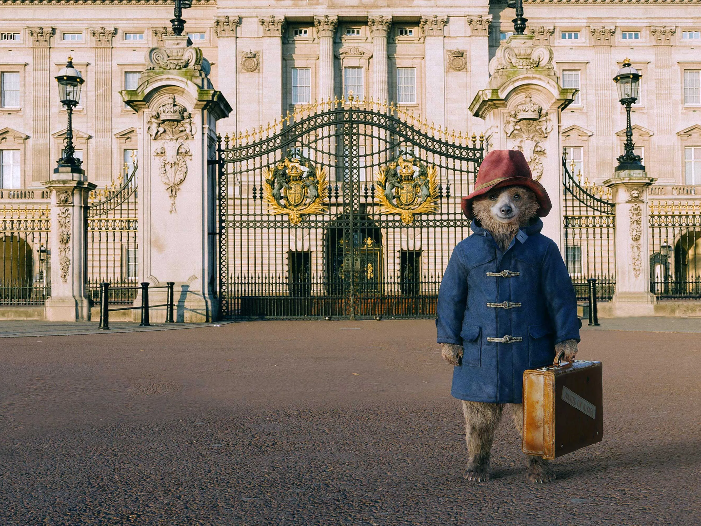
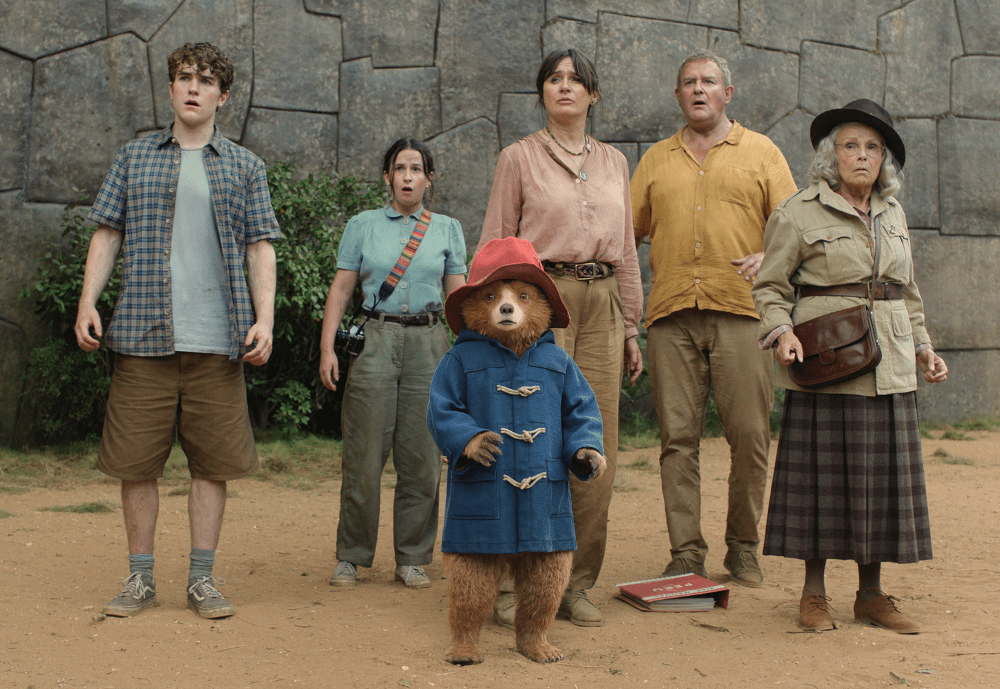

PADDINGTON
Paddington is a 2014 live-action fantasy family film based on the beloved children's book character created by Michael Bond. The movie tells the heartwarming story of a young Peruvian bear who travels to London in search of a new home and stumbles upon the kind-hearted Brown family, who take him in — despite some initial doubts.
Paddington is a charming tale about kindness, acceptance, and the power of good manners. A perfect family-friendly adventure full of humor, warmth, and unforgettable characters.
 Set against the backdrop of modern-day London (but with a distinctly classic feel), *Paddington* is filled with whimsical visual gags, vibrant set designs, and stunning special effects that bring the talking bear to life in a way that feels both magical and real. From getting stuck in drainpipes to accidentally flooding the bathroom, Paddington’s mishaps bring chaos — but also joy and unexpected friendship into the lives of everyone around him.
The film follows Paddington as he tries to adapt to life in a bustling London while staying true to his polite and optimistic nature. It introduces viewers to the warm-hearted Brown family — Henry, Mary, Judy, and Jonathan — who give Paddington a chance to find a place where he truly belongs. His journey teaches valuable lessons about kindness, tolerance, and the importance of doing what is right.
 One of the most touching aspects of the film is how it balances humor with emotional depth. Whether he's sipping tea or exploring the city, Paddington always manages to charm those around him — even the grumpiest ones.
The sequel, *Paddington 2*, continued the success with even more colorful adventures and received widespread critical acclaim, often being called one of the best family films of recent years. Both films were praised for their gentle tone, visual style, and Ben Whishaw’s warm voice performance as Paddington.
 Paddington’s love for marmalade sandwiches has become iconic, appearing in almost every scene and symbolizing his innocent joy and simple pleasures.
Paddington’s love for marmalade sandwiches has become iconic, appearing in almost every scene and symbolizing his innocent joy and simple pleasures.
Interesting Facts
- Paddington Bear was originally created in 1958 by Michael Bond and has become one of Britain’s most iconic literary characters.
- The film uses cutting-edge CGI technology to make Paddington look realistic and expressive while maintaining his charm.
- Ben Whishaw replaced Colin Firth as Paddington’s voice after Firth left due to creative differences over the portrayal of the character.
- Many scenes were shot on location in London, including Windsor Gardens and Paddington Station — which even got its own blue plaque for the film.
- The film received critical acclaim and won multiple awards, including Best Family Film at the National Movie Awards.
Main Cast
Ben Whishaw
Voice of Paddington
Sandra Bullock
Mrs. Bird (voice)
Hugh Bonneville
Henry Brown
Sally Hawkins
Mary Brown
Julie Walters
Old Mrs. Bird
Nick Frost
Mr. Gruber